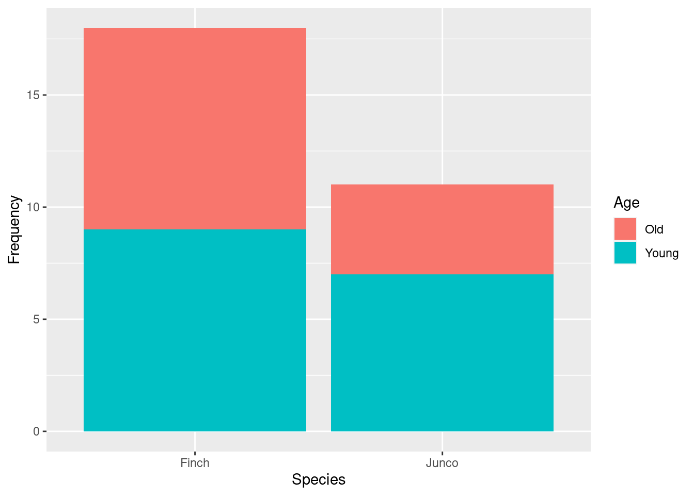
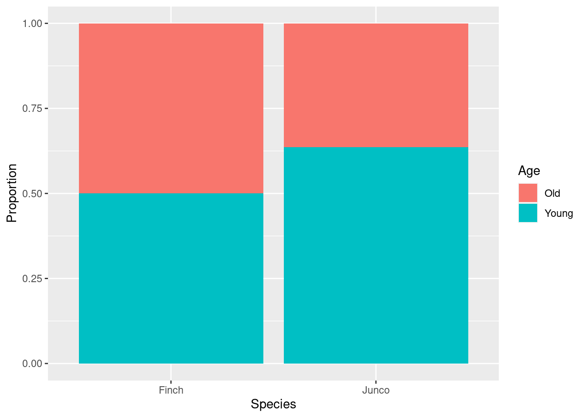
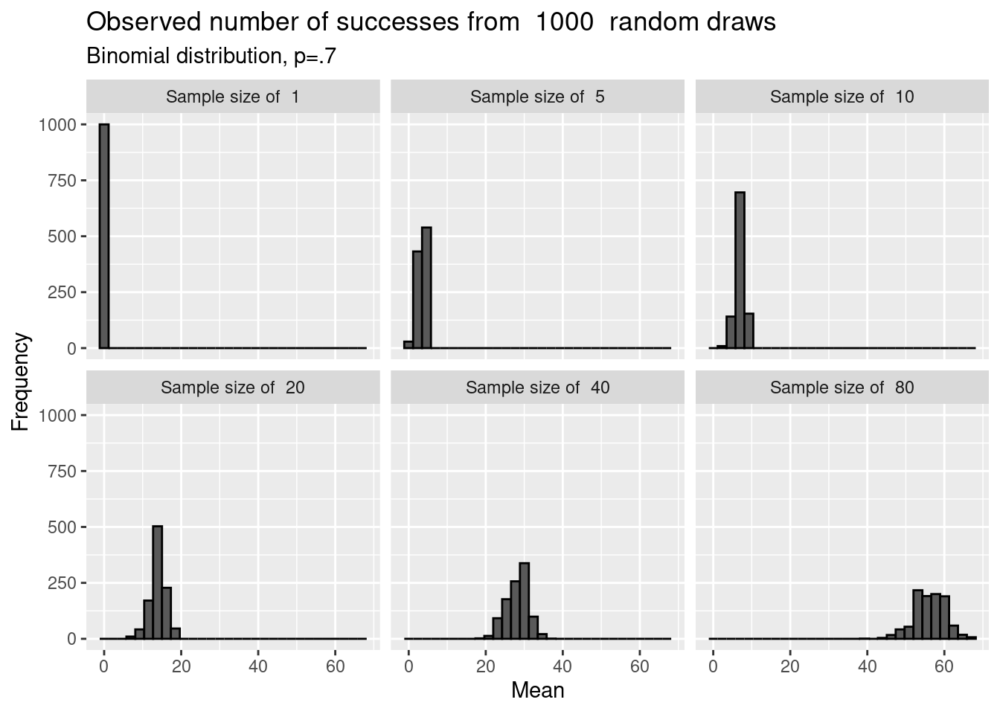

Now that we’ve covered hypothesis testing for both discrete and continous data, we’ll extend these ideas to compare differences among groups. In addition considering these differences, the same test we’ll let us consider if proportions follow a given ratio.
Example: Back to the birds
Let’s return to our bird example Klem (1989). We previously found that purple finches did not strike windows at proportions that might be predicted by population demographics using a binomial test. However, what if instead we wanted to compare the collision rate of old vs young birds among several species?
Cephas, CC BY-SA 3.0 <https://creativecommons.org/licenses/by-sa/3.0>, via Wikimedia Commons
Let’s start simple and just compare purple finches and dark-eyed juncos. Klem’s sample of finches totalled 18, with 9 being older (after hatching year). For juncos, 4 of 11 sampled birds were older. We could put this data in a table.
*Ob served**
*Ca rdinal**
Junco
Totals
Old
9
4
13
Young
9
7
16
Totals
18
11
First, we could plot our data
birds <-data.frame(Age =c("Old","Young","Old", "Young"),Species =c("Junco", "Junco", "Finch", "Finch"),Number =c(4, 7, 9, 9))library(ggplot2)ggplot(birds, aes(x= Species, y = Number)) +geom_col(aes(fill = Age)) +xlab("Species") +ylab("Frequency") +ggtitle("Age at collision for juncos and finches")

Given the different sampling sizes, a mosaic plot might help in visually comparing ratios.
ggplot(birds, aes(x= Species, y = Number)) +geom_col(aes(fill = Age), position ="fill")

Before we test this, we need to decide on an hypothesis. Although both species were predicted to occur at 3:1 ratios in the wild, that’s not what we are considering here. Instead, we want to know if the likelihood of old vs young birds being in our samples differed for the species. If so, it could be because the age structure of the focal populations are different or because the birds differ in their relationship to glass at different ages. However, we are still testing a distribution-based parameter.
\[
\begin{split}
H_O: p_{finches} = p_{juncos} \\
H_A: p_{finches} \neq p_{juncos} \\
where \ p \ is \ likelihood \ of \ sampled \ bird \ being \ older \\
\end{split}
\]
Put another way,we want to test if p is independent of species.
\[
\begin{split}
H_O: Probability \ of \ older \ bird \ hitting \ window \ is \ independent \ of \ species \\
H_A: Probability \ of \ older \ bird \ hitting \ window \ is \ dependent \ of \ species \\
\end{split}
\]
This formulation is important, because it helps form our predictions under the null hypothesis. What would we expect if p did not differ among species? If age and species were independent, we could expect
\[
Pr[ Old \ AND \ Given \ species\ use] = Pr[given \ species] * Pr[Old]
\]
Since we have 13/29 birds are old, we should expect
Exp ected
Car dinal
Junco
Totals
Old
18 *13/29
11 *13/29
13
Young
18 *16/29
11 *16/29
16
Totals
18
11
29
In order to carry out a sampling experiment to consider noise from this expected outcome, we have to determine the p parameter to use for our population. This is because under the null hypothesis, there is only one population- any observed difference is just due to chance!
However, we have an issue - we don’t know p. In our binomial experiment it was set by our null hypothesis. Now we are comparing p among species, but that doesn’t set a population distribution.
To fix this, we go back to our normal approximations. We have shown for large sample sizes the binomial distribution follows the central limit theorem.
sampling_experiment_long$Sample_size <-factor(sampling_experiment_long$Sample_size, levels =c("1","5","10", "20", "40", "80"))levels(sampling_experiment_long$Sample_size) <-paste("Sample size of ", levels(sampling_experiment_long$Sample_size))ggplot(sampling_experiment_long,aes(x=mean)) +geom_histogram(color="black") +labs(title=paste("Observed means from ", number_of_simulations, " random draws"),subtitle ="Binomial distribution, p=.7", x="Mean",y="Frequency")+facet_wrap(~Sample_size, nrow =2)
`stat_bin()` using `bins = 30`. Pick better value with `binwidth`.

So, we can replace the binomial distribution in our sampling experiment with a normal population. To use this approach, we estimate a value for p, \(\hat{p}\), from the data, and let
We then draw only 1 draws this distribution? Why only 1? Because we need to keep the sample sizes the same, so the row and column totals are set! Remember this for a moment. After we draw 1 number, we fill in the rest.
Once we carry out the sampling experiment, we can Z-transform our cell data(because they are normal now!). The results for a single cell would follow a N(0,1) distribution (the Z). If we wanted, we could square these outcomes (which would then follow a \(\chi^2\) distribution, by definition), and, since we have 4 cells, add them. The resulting variate would follow a \(\chi^2\) distribution with 1 degree of freedom (since we drew 1 numbers for the free “cell” in our table). Finally, because of all the p’s above, we could actually rewrite all of this as
The resulting test is called a \(\chi^2\) test. Note this takes count-based data and uses a continuous distribution to describe it, so it’s an approximate test.The degrees of freedom associated with this test are based on the number of free cells (or, alternatively, the number of cells minus the parameters you had to fill in!). This typically can be calculated as (# of columns -1)*(# of rows -1). We can carry out this test in R using the chisq.test function.
This function requires a matrix of aggregated values (counts for each cell). Currently we have a data frame (birds). To make this work, we have a few options.
Input it directly
chisq.test(matrix(c(9,4,9,7), 2, 2, byrow=T))
Warning in chisq.test(matrix(c(9, 4, 9, 7), 2, 2, byrow = T)): Chi-squared
approximation may be incorrect